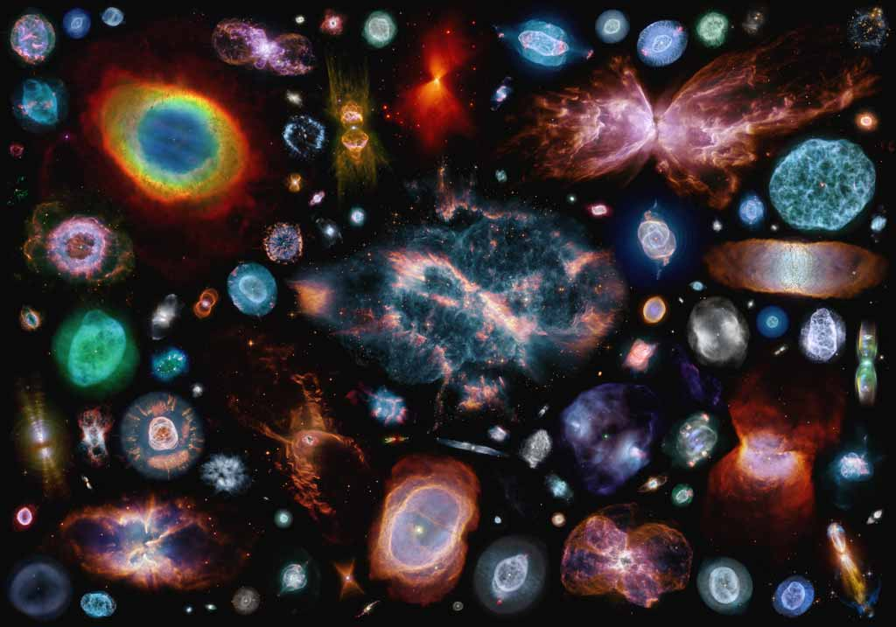

Nebulosas
Las nebulosas son enormes nubes de gas y polvo cósmico en el espacio.
Aunque a simple vista parecen oscuras o difusas, muchas brillan intensamente
cuando la luz de las estrellas cercanas las ilumina o cuando en su interior
nacen nuevas estrellas.
Son consideradas las “cunas de las estrellas”, ya que en ellas se forman nuevos sistemas estelares.

Tipos de nebulosas
- Nebulosas de emisión
- Brillan porque el gas (principalmente hidrógeno) es energizado por la radiación de estrellas cercanas.
- Suelen verse de color rojo o rosado.
- Ejemplo: Nebulosa de Orión (M42).
- Nebulosas de reflexión
- No emiten luz propia, pero reflejan la luz de estrellas cercanas.
- Suelen verse azuladas.
- Ejemplo: Nebulosa de las Pléyades.
- Nebulosas oscuras
- Son nubes densas de gas y polvo que bloquean la luz de las estrellas detrás de ellas.
- Ejemplo: Nebulosa del Saco de Carbón.
- Nebulosas planetarias
- Restos de estrellas moribundas que expulsan sus capas externas de gas.
- Suelen ser circulares o esféricas, con colores brillantes.
- Ejemplo: Nebulosa del Anillo (M57).
- Restos de supernova
- Se forman tras la explosión de una estrella masiva.
- Ejemplo: Nebulosa del Cangrejo (M1).
Características generales
- Son los lugares donde nacen nuevas estrellas y planetas.
- Ayudan a reciclar la materia del universo: los restos de estrellas viejas sirven para formar nuevas generaciones de astros.
- Nos permiten estudiar los procesos de la evolución estelar.
Volver al inicio